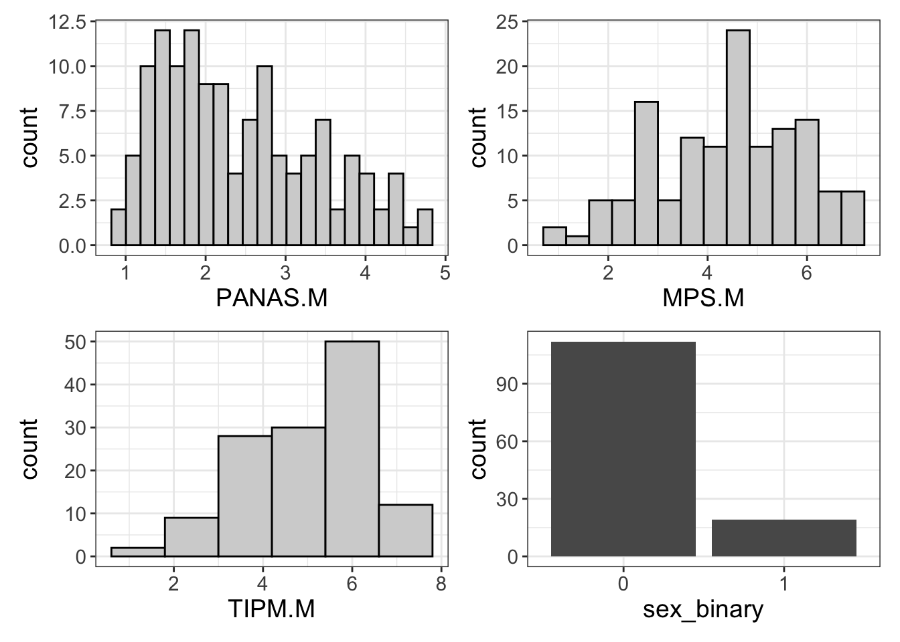
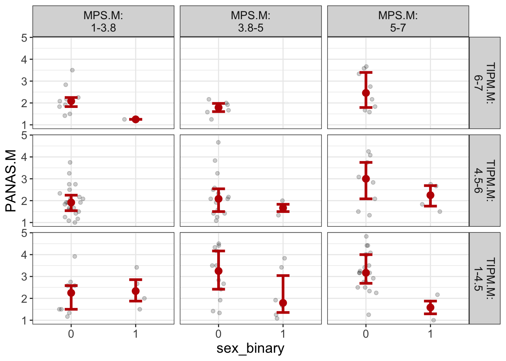
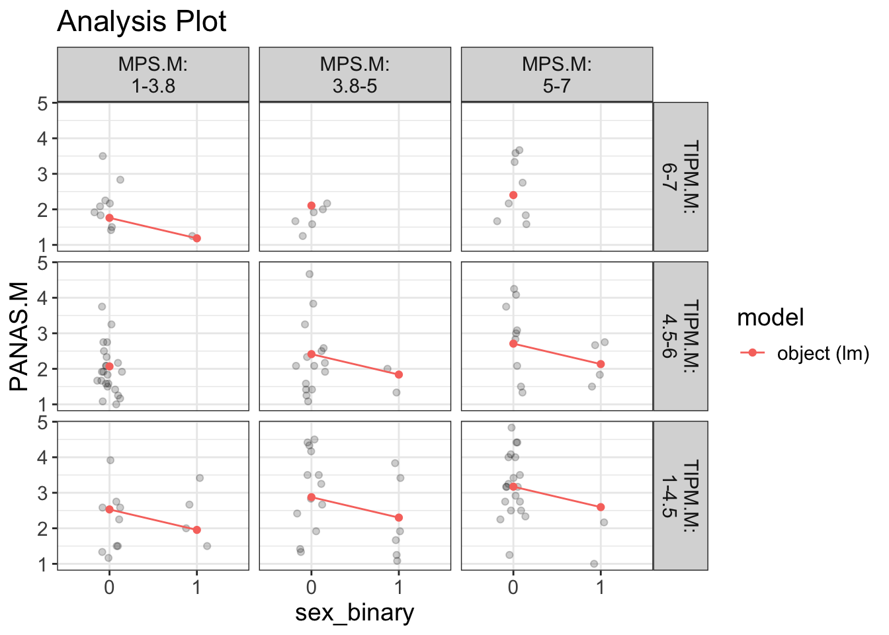
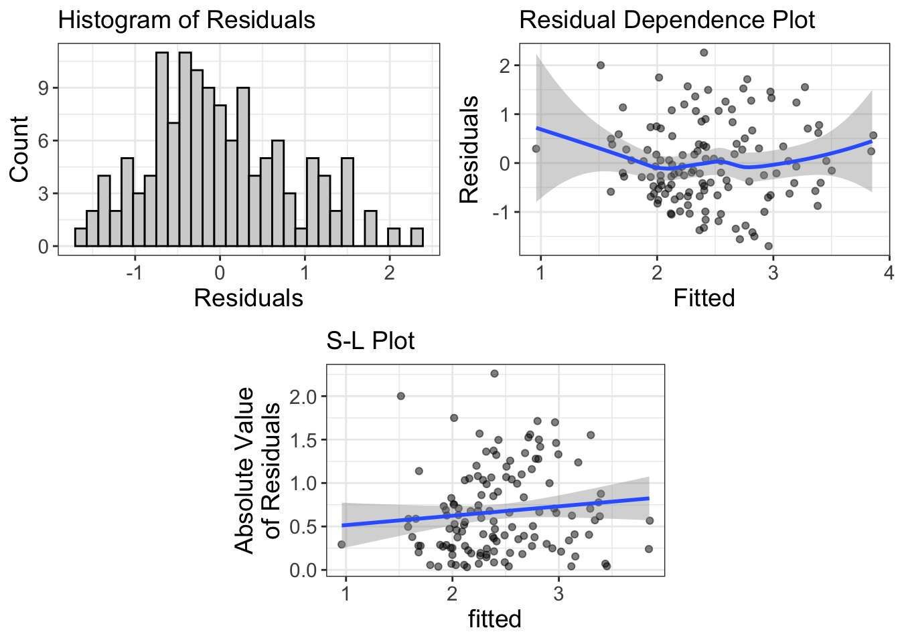
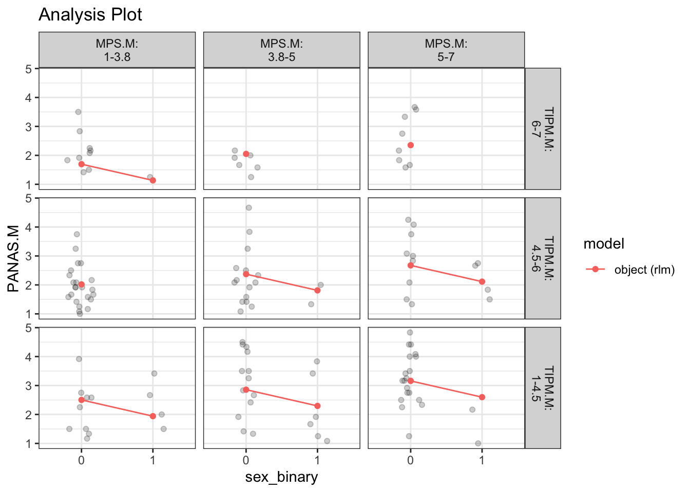
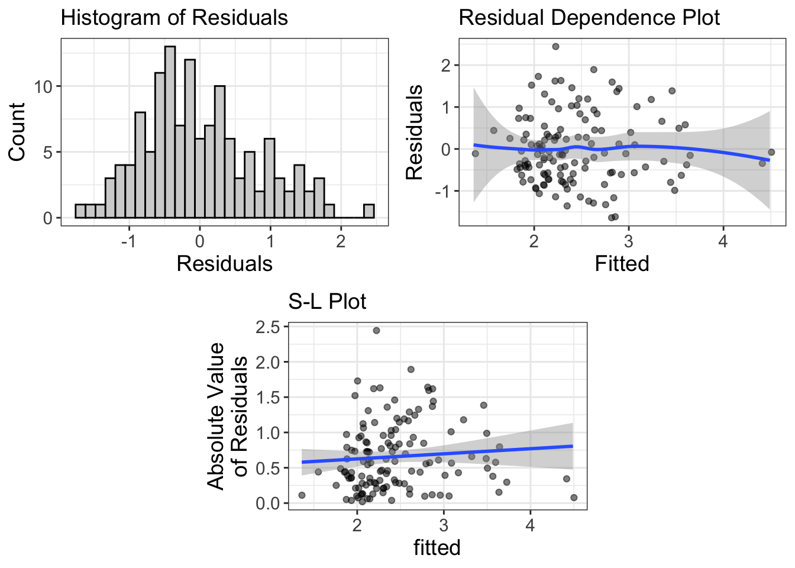
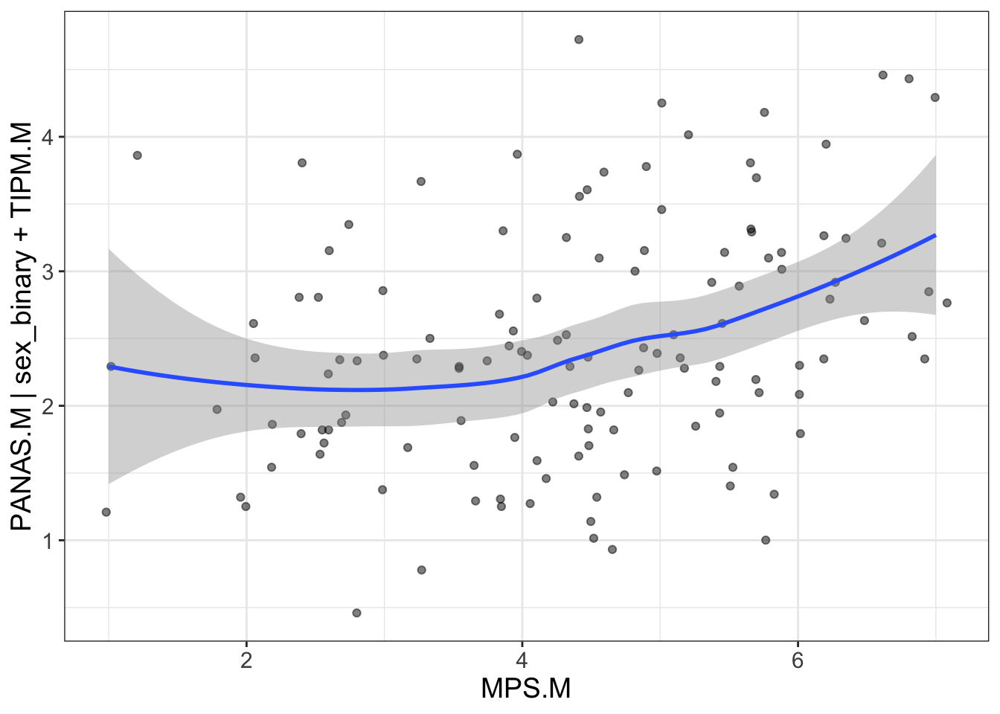

The present data analysis was based on the “PSYR6003.A2.sav” fictional data set created and published by Dr. Igor Yakovenko. This file contained 137 undergraduate student respondents and is composed of measures of 1) socially prescribed perfectionism (SPP) using the Multidimensional Perfectionism Scale Short Form: Socially Prescribed Subscale (3-year version); 2) negative affect assessed by the PANAS: Negative Affect (3-year version); and conscientiousness measured using the Ten Item Personality Measure: Conscientiousness Subscale (3-year version). Interested on the topic we decided to clone the repository to conduct an exploratory analysis to assess the relationship of responses of among the scales.
library(tidyverse) # to tidy up the data
── Attaching core tidyverse packages ──────────────────────── tidyverse 2.0.0 ──
✔ dplyr 1.1.4 ✔ readr 2.1.5
✔ forcats 1.0.0 ✔ stringr 1.5.1
✔ ggplot2 3.5.0 ✔ tibble 3.2.1
✔ lubridate 1.9.3 ✔ tidyr 1.3.1
✔ purrr 1.0.2
── Conflicts ────────────────────────────────────────── tidyverse_conflicts() ──
✖ dplyr::filter() masks stats::filter()
✖ dplyr::lag() masks stats::lag()
ℹ Use the conflicted package (<http://conflicted.r-lib.org/>) to force all conflicts to become errors
library(dplyr) # to manipulate and clean data library(haven) # for writing & reading SPSS/SAV fileslibrary(flexplot) # to plot data using the best fit graphical tool
Attaching package: 'flexplot'
The following object is masked from 'package:ggplot2':
flip_data
library(patchwork) #this allows us to combine several lines of code and run them at oncelibrary(MASS)
Attaching package: 'MASS'
The following object is masked from 'package:patchwork':
area
The following object is masked from 'package:dplyr':
select
library(apaTables) # generates tables formatted into APA style
Data Initialization & Cleaning
The data set was then loaded into the software package R (Version 4.2.3) running on the integrated environment RStudio (Version 2023.12.1.402). We used the package “haven” (cite, year) to upload the data into the directory. After the loading process, the data set was put into an object.
Before starting the analysis, we conducted a visual inspection of the data to detect any errors, extraneous or missing values. To manage this data set, we used the package “tidyverse” (Wickham et al., 2019). Visual inspection revealed that 5 of the cases had missing values (NAs), which we decided to omit to ensure accuracy and reliability of the analysis. In addition, for the purposes of this analysis we decided to consider sex in a binary context, so we created a new variable filtering the data to only include “male” and “female” cases, omitting one participant who identified as “other”. Upon removing the previously discussed cases our final sample decreased by 6 (n=131).
In order include the binary sex of participants into our analysis we transformed this categorical variable into a factor variable. The binary sex variable was also mutated into a numerical format (“female” =0, “male” =1) using package “dplyr” (Wickham et al., 2019). Lastly, we reverse-coded the variable “tipm.CONS2.3y” prior to gathering descriptive statistics of the variables.
#To initialize the data we use the following lines of codelibrary(haven) #this package allows us to work with sav filesDAT<-read_sav("PSYR6003.A2.sav")#this puts the data set into an objectDATA<-na.omit(DAT)#omit missing casesDATA<-filter(DATA, sex =="Male"| sex =="Female")#this excludes the case "Other (specify)"DATA<-na.omit(DATA)print(DATA)#this runs the data and ensures it is working after the changesS
#To check if the variable "sex" is a factor variable; which it is not, so we must transform itDATA$sex <-factor(DATA$sex)#this transform the string variable into a factorprint(DATA)#this allows us to visualize the change
is.factor(DATA$sex)#this double checks if it truly worked
[1] TRUE
#FILTER FOR NON-BINARYNewDATA <- DATA %>%mutate(sex_binary =ifelse(sex =="Female", 0,1))#this codes "Female" cases into "0" and "Male" cases into "1"
#to reverse code we use the following NewDATA1 <- NewDATA %>%mutate(across(matches("tipm.CONS2.3y"), ~8- .))view(NewDATA1)
Descriptive Statistics & Bivariate Correlations
To determine how individuals performed in average in each of the dimension, we gathered summary statistics and bivariate correlations for the scales and binary sex. We decided to create 3 new objects comprised of the means of participant response for each item across the scales. We did so by using the package “dplyr” (Wickham et al., 2019). Subsequently we used the package “apaTables” (Stanley, 2021) to obtain a table containing the descriptive statistics and bivariate correlations.
We gathered the mean (M) and standard deviation (SD) values for binary sex (M=0.15, SD=0.35), SPP (M=4.38, SD=1.43), conscientiousness (M=5.03, SD=1.29), and negative affect (M=2.44, SD=0.98). We encountered no bivariate relationship between binary sex and SPP (r (129) = .01, p <.05), conscientiousness (r (129) = -.14, p <.05), nor negative affect (r (129) = -.16, p <.05).
The results of suggest that SPP is negatively correlated with conscientiousness (r (129) = -.21, p <.05), while it is also positively correlated with negative affect (r (129) = .37, p <.01). This suggests that those who experience SPP are less conscientious and more likely to experience negative affect. Additionally, negative affect was negatively correlated with conscientiousness (r (129) =- .37, p <.01), indicating that individuals who experience negative affect may be less conscientious.
library(patchwork) #we will need this libary in order to get the means across all the scalesNewDATA2 <- NewDATA1 %>%mutate(MPS.M =rowMeans(across(starts_with("mps"))),TIPM.M =rowMeans(across(starts_with("tipm"))),PANAS.M =rowMeans(across(guilt1.3y : host3.3y)))#this calculates the means of the following: MPS, TIPM, PANAS#We want to select only the variables that we are interested in,WORKDATA <-NewDATA2 %>% dplyr::select(sex_binary, MPS.M, TIPM.M, PANAS.M)library(apaTables) # we need this package to get our descriptives tabletable1 <-apa.cor.table(WORKDATA, table.number=1, filename="Table_1.doc") #This creates our table for M and SD of all variables and saves itprint(table1) #we can vizualize the data in here
Table 1
Means, standard deviations, and correlations with confidence intervals
Variable M SD 1 2 3
1. sex_binary 0.15 0.35
2. MPS.M 4.38 1.43 .01
[-.16, .18]
3. TIPM.M 5.03 1.29 -.14 -.21*
[-.30, .03] [-.37, -.04]
4. PANAS.M 2.44 0.98 -.16 .37** -.37**
[-.32, .01] [.21, .51] [-.51, -.22]
Note. M and SD are used to represent mean and standard deviation, respectively.
Values in square brackets indicate the 95% confidence interval.
The confidence interval is a plausible range of population correlations
that could have caused the sample correlation (Cumming, 2014).
* indicates p < .05. ** indicates p < .01.
Hypothesis 1:
Model Building and Statistical Assumptions
Interested on whether binary sex, conscientiousness and SPP significantly predict negative affect. First, we hypothesized that women would experience higher negative affect and SPP, while being less conscientious than men. To check if our hypothesis was correct, we created a model using the package “flexplot” (Fife, 2022).
Univariate Distribution
First, we created univariate plots to visualize the data using the package “patchwork” (Pedersen, 2024) When analyzing the univariate distribution of the variables (Figure 1) we noted that the measure of negative affect is asymmetric with a right skew, indicating that most undergraduate students scored lower in this scale. SPP is appears to be bimodal and slightly left skewed, suggesting that some students scored lower in this measure, however, most seemed to score above the average. Conscientiousness appeared to be approximately normally distributed but left skewed, which can be attributed to students scoring high on this measure. Finally, the binary sex distribution reveled that most undergraduate students identified as female (or “0”).
Model and Diagnostics
We visualized the full model (Figure 2), which indicated that a right skewed data set. Since this violates the assumption of normality, linearity and homoskedasticity, so we decided to run a sensitivity analysis using the package “MASS” (Venables & Ripley, 2002). After running a sensitivity test for normality, it seems like that there is a slight change we are comparing the two. When checking for sensitivity for linearity, since our plot had curvilinear effect, we test this model using the quadratic method. The assumption of homoskedasticity was also violated, which we could mitigate using one of the following: 1) transform the dependent variable; 2) use weighted least squares (WLS); 3) find robust standard errors; or 4) use generalized least squares (GLS). However, for the purposes of this analysis we will disregard this assumption violation.
Results
To conclude our analysis, we used the package “flexplot” (Fife, 2022) to give us the estimates of the model. According to this the full model (Table 2) explains roughly 27% of the variance in negative affect. This suggests a large effect of sex, conscientiousness and socially prescribed perfectionism in predicting negative affect. The semi-partial R2 shows us that conscientiousness is the variable that explains the most effect on negative affect, accounting for ~16%, followed by SPP (8%) and sex (~3%).
The estimates suggest that for every 1-point increase in negative affect, there is a 0.26 decrease in conscientiousness. Inversely, for every 1-point increase in negative affect, we observed a 0.20 increase in SPP. Finally, every point increase, a 0.58 decrease is seen in sex, indicating that females are more likely to experience negative affect.
Overall, we can conclude that sex and SPP positively impact negatively affect, while the opposite is true for conscientiousness.
library(flexplot)#H1library(patchwork)a=flexplot(PANAS.M~1, data= NewDATA2)b=flexplot(MPS.M~1, data= NewDATA2)c=flexplot(TIPM.M~1, data= NewDATA2)d=flexplot(sex_binary~1, data = NewDATA2)a+b+c+d # these are the univariate distributions of each

#Now we create our modelfull<-lm(formula = PANAS.M ~ sex_binary+TIPM.M+MPS.M,data= NewDATA2 ) #create the full modelflexplot(PANAS.M~sex_binary|MPS.M+TIPM.M, data=NewDATA2, method ="lm") #This is the full model to check if sex, conscientiousness and SPP significantly predict negative affect

visualize(full, plot ="model") #to check the model
`geom_line()`: Each group consists of only one observation.
ℹ Do you need to adjust the group aesthetic?
`geom_line()`: Each group consists of only one observation.
ℹ Do you need to adjust the group aesthetic?
`geom_line()`: Each group consists of only one observation.
ℹ Do you need to adjust the group aesthetic?

visualize(full, plot ="residuals") #to check the violations
Note: one or more of your variables has less than 5 values, yet they're treated as numeric.

#normality is violated so lets do a robust modellibrary(MASS) robust<-rlm(formula = PANAS.M ~ sex_binary+TIPM.M+MPS.M,data= NewDATA2 )visualize(robust, plot="model") #so we run both this and the ful to compare them
`geom_line()`: Each group consists of only one observation.
ℹ Do you need to adjust the group aesthetic?
`geom_line()`: Each group consists of only one observation.
ℹ Do you need to adjust the group aesthetic?
`geom_line()`: Each group consists of only one observation.
ℹ Do you need to adjust the group aesthetic?

#linearity is violated so we do quadratic to checkquad<-flexplot(PANAS.M~sex_binary|MPS.M+TIPM.M, data=WORKDATA, method="quadratic")#Now we check our estimates and summariesestimates(full)
Table 2
Regression results using PANAS.M as the criterion
Predictor b b_95%_CI beta beta_95%_CI sr2 sr2_95%_CI r
(Intercept) 2.93** [2.08, 3.77]
sex_binary -0.58** [-0.99, -0.16] -0.21 [-0.36, -0.06] .04 [-.02, .10] -.16
TIPM.M -0.26** [-0.37, -0.14] -0.34 [-0.49, -0.18] .11 [.02, .20] -.37**
MPS.M 0.20** [0.10, 0.31] 0.30 [0.14, 0.45] .08 [.00, .17] .37**
Fit
R2 = .269**
95% CI[.13,.37]
Note. A significant b-weight indicates the beta-weight and semi-partial correlation are also significant.
b represents unstandardized regression weights. beta indicates the standardized regression weights.
sr2 represents the semi-partial correlation squared. r represents the zero-order correlation.
Square brackets are used to enclose the lower and upper limits of a confidence interval.
* indicates p < .05. ** indicates p < .01.
Hypothesis 2
Model Building and Statistical Assumptions
After checking our first hypothesis we were curious to determine if SPP would predict a unique variance in negative affect over and above sex and conscientiousness. Since our variable of interest was SPP, we wanted to see if after controlling for conscientiousness and binary sex, we would still predict negative affect. We started by creating a quadratic added plot (Figure 3) to see the fit of our data, using the package “flexplot” (Fife, 2022). Upon doing so we can see that this is a better fit for our data.
To determine if the current data violates any of the assumptions, we visualized the plot containing the residuals (Figure 4). Overall, the assumptions were partially not supported as despite looking somewhat normally distributed, the model violates normality as it is slightly right skewed. Linearity is also violated, and for that reason we have fitted the data in a quadratic, which improved the fit of our model. Finally, the assumption of homoskedasticity was not met as it can be seen by both the R-D and S-L plots consistent with the added-variable plot we have generated with the package “flexplot” (Fife, 2022) (Figure 5).
Results
To determine if the SPP variable did in fact predict a unique variance in negative affect over and above sex and conscientiousness, we created a reduced model isolated these control variables. We then used “flexplot” (Fife, 2022) to do a model comparison between the full (including SPP), and the reduced (excluding SPP) models. Model comparison revealed that the full model explains only 3.3% more variance in negative affect, indicating that either model does well in predicting the outcome. The comparison reveals the full model to be of best fit of the data.
The estimates suggest that for every point increase in negative affect conscientiousness predicted a decrease of -.69; meanwhile, every point increase predicted a SPP predicted a decrease of -0.22, and binary sex a decrease of -.51.
The predicted differences between the models suggest that the full model can predict up to a 1-point difference in negative affect which should be considered when interpreting the findings.
Overall, we can conclude that although SPP does predict some difference in variance of negative affect of undergraduate student, other variables such as conscientiousness and sex also relate to it in a significant manner. Based on the information presented above we can conclude that SPP does not predict negative affect above and beyond binary sex and conscientiousness.
#not a good fit so we do a multiple regression modelmultiple_reg_model <-lm(PANAS.M~sex_binary+TIPM.M+ MPS.M +I(TIPM.M^2) +I(MPS.M^2), data=WORKDATA)visualize(multiple_reg_model, plot="residuals")
Note: one or more of your variables has less than 5 values, yet they're treated as numeric.

#we do an added plot to confirm if the control variables to plot our full model added.plot(PANAS.M~MPS.M, data = WORKDATA, lm_formula = PANAS.M~sex_binary+ TIPM.M)

#Do model comparisonreduced <-lm(PANAS.M~sex_binary+I(TIPM.M^2) +I(MPS.M^2),data=WORKDATA)full <-lm(PANAS.M~sex_binary+TIPM.M+ MPS.M +I(TIPM.M^2)+I(MPS.M^2),data=WORKDATA)#compare the modelsmodel.comparison(reduced, full)
Table 3
Regression results using PANAS.M as the criterion
Predictor b b_95%_CI beta beta_95%_CI sr2 sr2_95%_CI r
(Intercept) 4.92** [2.97, 6.87]
sex_binary -0.51* [-0.93, -0.09] -0.18 [-0.34, -0.03] .03 [-.02, .08] -.16
TIPM.M -0.74* [-1.41, -0.08] -0.98 [-1.86, -0.10] .03 [-.02, .07] -.37**
MPS.M -0.28 [-0.82, 0.26] -0.41 [-1.20, 0.38] .01 [-.02, .03] .37**
I(TIPM.M^2) 0.05 [-0.02, 0.12] 0.65 [-0.23, 1.52] .01 [-.02, .04] -.34**
I(MPS.M^2) 0.06 [-0.01, 0.12] 0.70 [-0.08, 1.49] .02 [-.02, .06] .39**
Fit
R2 = .299**
95% CI[.15,.39]
Note. A significant b-weight indicates the beta-weight and semi-partial correlation are also significant.
b represents unstandardized regression weights. beta indicates the standardized regression weights.
sr2 represents the semi-partial correlation squared. r represents the zero-order correlation.
Square brackets are used to enclose the lower and upper limits of a confidence interval.
* indicates p < .05. ** indicates p < .01.
print(table3)
# A tibble: 6 × 3
country year rate
<chr> <dbl> <chr>
1 Afghanistan 1999 745/19987071
2 Afghanistan 2000 2666/20595360
3 Brazil 1999 37737/172006362
4 Brazil 2000 80488/174504898
5 China 1999 212258/1272915272
6 China 2000 213766/1280428583
References:
Fife, D. (2022). Flexplot: Graphically-based data analysis. Psychological Methods, 27(4), 477–496. https://doi.org/10.1037/met0000424
Pedersen T (2024). patchwork: The Composer of Plots. R package version 1.2.0.9000, https://github.com/thomasp85/patchwork, https://patchwork.data-imaginist.com.
Stanley D (2021). _apaTables: Create American Psychological Association (APA) Style Tables_. R package version 2.0.8, <https://CRAN.R-project.org/package=apaTables>.
Venables WN, Ripley BD (2002). Modern Applied Statistics with S, Fourth edition. Springer, New York. ISBN 0-387-95457-0, https://www.stats.ox.ac.uk/pub/MASS4/.
Wickham, H., Averick, M., Bryan, J., Chang, W., McGowan, L. D., François, R., Grolemund, G., Hayes, A., Henry, L., Hester, J., Kuhn, M., Pedersen, T. L., Miller, E., Bache, S. M., Müller, K., Ooms, J., Robinson, D., Seidel, D. P., Spinu, V., Takahashi, K., Vaughan, D., Wilke, C., Woo, K., & Yutani, H. (2019). Welcome to the tidyverse. Journal of Open Source Software, 4(43), 1686. https://doi.org/10.21105/joss.01686